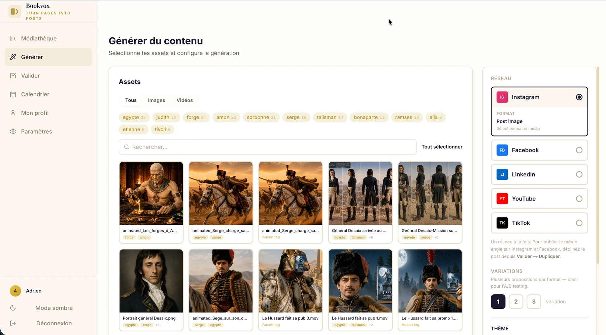
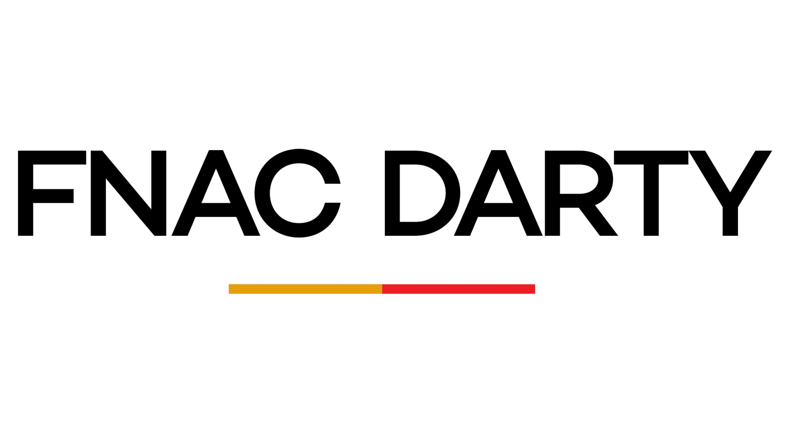
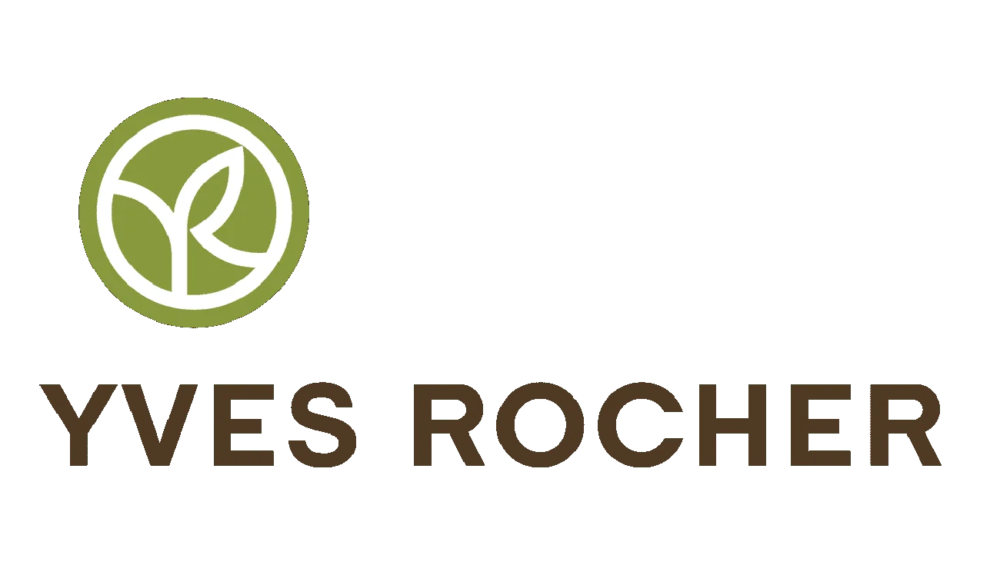
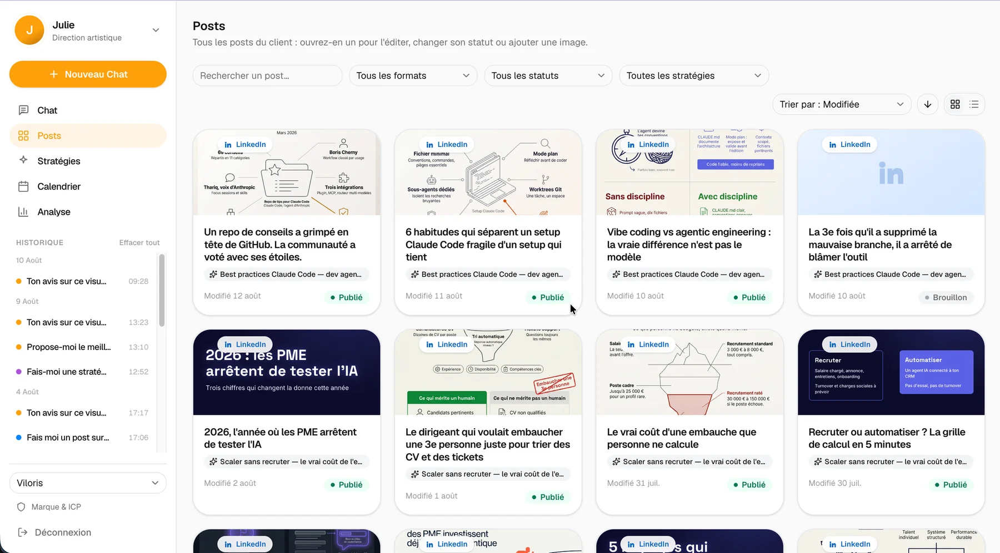
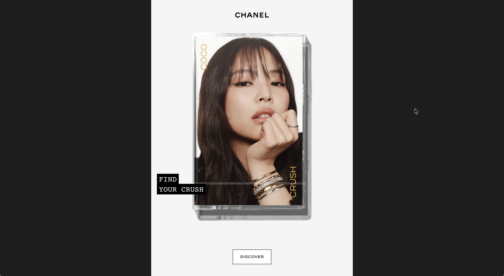
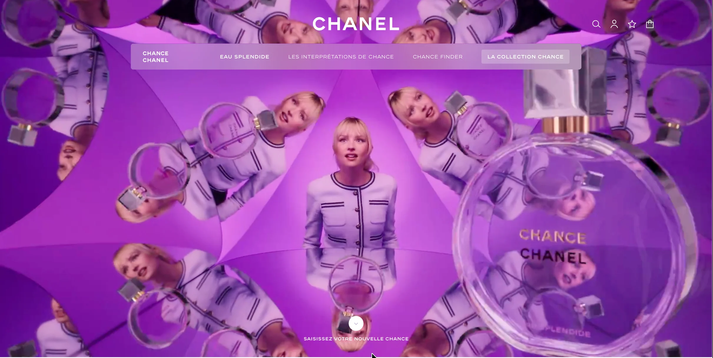
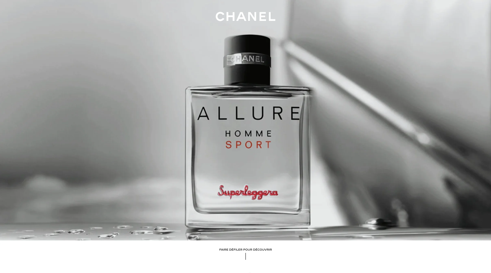
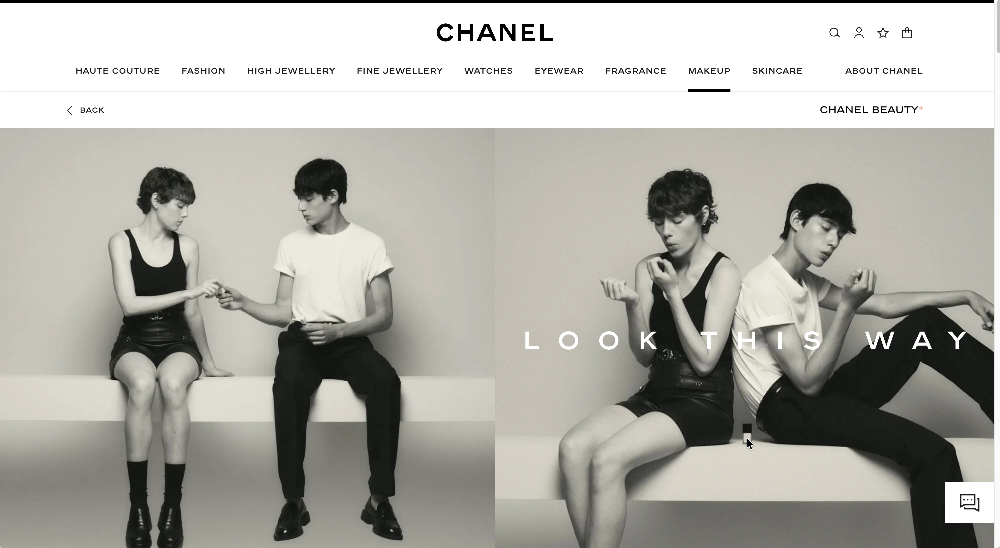
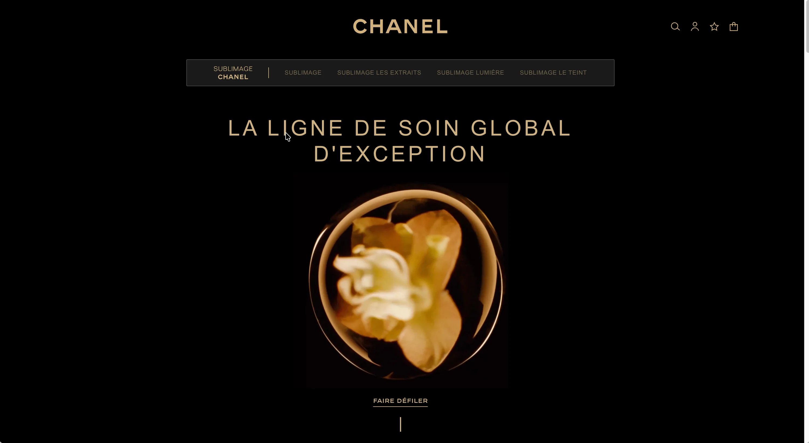
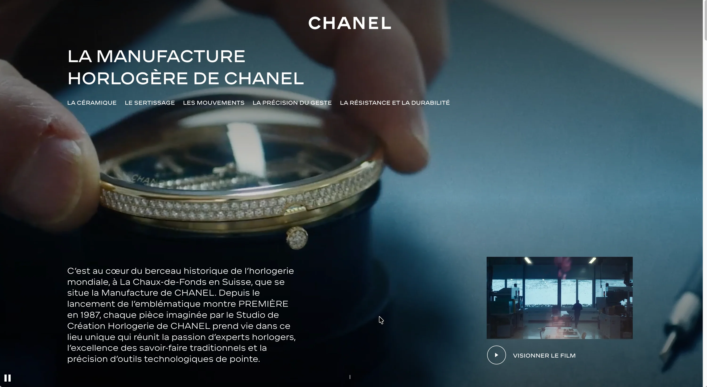

<meta charset="utf-8">
<!-- ══════════════════════════════════════════════════════════════════════
     MAQUETTE — direction « Vue éclatée » (F), page d'accueil complète.
     Établie le 2026-08-18. Non branchée sur l'application : c'est un
     fichier autonome, à ouvrir directement dans un navigateur.

     Les images pointent en relatif vers `public/` : rien n'est dupliqué,
     et le fichier reste à ~40 Ko. Le déplacer casse ces chemins.

     Contenu réel repris de `src/messages/fr.json`. Aucune donnée inventée.
     Deux réserves consignées à la production de cette maquette :
       - `public/clients/prismamedia.webp` n'a pas de canal alpha (fond
         blanc incrusté) ; contourné ici en CSS, à réexporter à la source.
       - Le portrait retenu est celui du hero actuel ; le choix entre les
         quatre fichiers `adrien-profil*.webp` n'est pas tranché.
     ══════════════════════════════════════════════════════════════════ -->
<title>adrienvidal.com — Vue éclatée</title>
<link rel="preconnect" href="https://fonts.googleapis.com">
<link rel="preconnect" href="https://fonts.gstatic.com" crossorigin>
<link rel="stylesheet" href="https://fonts.googleapis.com/css2?family=Chivo:ital,wght@0,300;0,400;0,700;0,900;1,400&display=swap">

<style>
/* ══════════════════════════════════════════════════════════════════════
   DIRECTION F — VUE ÉCLATÉE · home complète
   THÈSE : « de la base PostgreSQL à l'interface React » cesse d'être une
   phrase. C'est la pile qui s'écarte sous le pointeur, quatre plaques
   nommées, la vraie capture posée sur celle du dessus. Refuse la grille
   de cartes icône-titre-liste que la page portait jusqu'ici.
   MONDE : émail bleu-nuit, plaques serties à bord clair, un cyan qui ne
   sert qu'à l'action et à l'état vivant. Chivo, chiffres tabulaires.
   MOMENT : un seul, la pile. Tout le reste est immobile — c'est ce qui
   lui donne son poids.
   ═══════════════════════════════════════════════════════════════════ */
:root {
  --bg:    oklch(0.185 0.020 262);
  --bg2:   oklch(0.215 0.022 262);
  --plate: oklch(0.255 0.024 262);
  --edge:  oklch(0.345 0.026 262);
  --edge2: oklch(0.45 0.03 262);
  --ink:   oklch(0.965 0.004 262);
  --mut:   oklch(0.755 0.016 262);
  --dim:   oklch(0.62 0.018 262);
  --glow:  oklch(0.80 0.145 196);
  --glow2: oklch(0.68 0.155 196);
  --on-glow: oklch(0.17 0.03 196);
  --r: 4px;
}
* { box-sizing: border-box; }
html { scroll-behavior: smooth; }
body {
  margin: 0; background: var(--bg); color: var(--ink);
  font-family: 'Chivo', system-ui, -apple-system, sans-serif;
  font-size: 16px; line-height: 1.6; font-variant-numeric: tabular-nums;
  -webkit-font-smoothing: antialiased;
}
a { color: inherit; text-decoration: none; }
img { max-width: 100%; }
:focus-visible { outline: 2px solid var(--glow); outline-offset: 3px; border-radius: 2px; }
::selection { background: var(--glow); color: var(--on-glow); }
[id] { scroll-margin-top: 84px; }

.shell { max-width: 1240px; margin: 0 auto; padding: 0 clamp(20px, 4vw, 48px); }
.sec { padding: clamp(56px, 8vw, 104px) 0; }
.sec + .sec { border-top: 1px solid var(--edge); }
.h2 { font-size: clamp(26px, 3.4vw, 40px); font-weight: 900; letter-spacing: -0.03em; line-height: 1.06; margin: 0 0 10px; text-wrap: balance; }
.sub { color: var(--mut); font-size: clamp(14.5px, 1.3vw, 16.5px); margin: 0 0 clamp(30px, 4vw, 48px); max-width: 60ch; }

/* ── Barre ── */
.nav {
  position: sticky; top: 0; z-index: 40; height: 64px;
  display: flex; align-items: center; justify-content: space-between; gap: 16px;
  background: color-mix(in oklch, var(--bg) 86%, transparent);
  backdrop-filter: blur(10px);
  border-bottom: 1px solid var(--edge);
  padding: 0 clamp(20px, 4vw, 48px);
}
.nav__l { display: flex; align-items: center; gap: 14px; }
.nav__logo { font-weight: 900; font-size: 16px; letter-spacing: -0.01em; white-space: nowrap; }
.nav__lang { font: inherit; font-size: 11.5px; font-weight: 700; letter-spacing: 0.06em; color: var(--mut);
  background: none; border: 1px solid var(--edge); border-radius: var(--r); padding: 5px 9px; min-height: 26px; cursor: pointer; }
.nav__lang:hover { color: var(--ink); border-color: var(--edge2); }
.nav__links { display: flex; align-items: center; gap: 26px; list-style: none; margin: 0; padding: 0; }
.nav__links a { font-size: 13.5px; color: var(--mut);
  /* La barre fait 64px : on peut offrir une vraie zone de frappe sans rien decaler. */
  display: inline-flex; align-items: center; min-height: 44px; }
.nav__links a:hover { color: var(--ink); }
.nav__cta { background: var(--glow); color: var(--on-glow); font-weight: 700; font-size: 13.5px;
  padding: 9px 17px; border-radius: var(--r); white-space: nowrap; }
.nav__cta:hover { background: var(--ink); }
.nav__burger { display: none; width: 44px; height: 44px; margin-right: -10px; background: none; border: 0;
  cursor: pointer; flex-direction: column; align-items: center; justify-content: center; gap: 5px; }
.nav__burger span { display: block; width: 22px; height: 2px; background: var(--ink); border-radius: 2px; }

/* ── Hero ── */
.hero { display: grid; grid-template-columns: minmax(0, 0.95fr) minmax(0, 1.05fr); gap: clamp(28px, 4vw, 56px);
  align-items: center; padding: clamp(44px, 6vw, 76px) 0 clamp(40px, 5vw, 64px); }
.hero h1 { font-size: clamp(30px, 4.1vw, 52px); font-weight: 900; line-height: 1.03; letter-spacing: -0.033em;
  margin: 0 0 20px; text-wrap: balance; }
.hero h1 u { text-decoration: none; color: var(--glow); }
.hero__sub { color: var(--mut); font-size: clamp(15px, 1.35vw, 17px); margin: 0 0 28px; max-width: 46ch; }
.btns { display: flex; gap: 11px; flex-wrap: wrap; }
.btn { font-size: 14px; font-weight: 700; padding: 13px 21px; border-radius: var(--r);
  background: var(--glow); color: var(--on-glow); min-height: 44px; display: inline-flex; align-items: center;
  transition: background .2s cubic-bezier(.22,1,.36,1); }
.btn:hover { background: var(--ink); }
.btn--ghost { background: transparent; color: var(--ink); box-shadow: inset 0 0 0 1px var(--edge2); }
.btn--ghost:hover { background: transparent; box-shadow: inset 0 0 0 1px var(--ink); }

/* ── LA PILE : le seul moment animé de la page ── */
.scene { perspective: 1250px; perspective-origin: 50% 44%; height: clamp(300px, 34vw, 440px); position: relative; }
.stage { position: absolute; inset: 0; transform-style: preserve-3d;
  transition: transform .55s cubic-bezier(.22,1,.36,1); will-change: transform; }
.layer { position: absolute; left: 50%; top: 50%; width: 68%; aspect-ratio: 16/10;
  border: 1px solid var(--edge2); background: var(--plate); border-radius: 6px;
  box-shadow: 0 22px 48px oklch(0 0 0 / 0.46); overflow: hidden;
  transition: transform .6s cubic-bezier(.22,1,.36,1); }
.layer img { width: 100%; display: block; }
.layer__body { padding: 15px 15px 42px; font-size: 12px; color: var(--dim); line-height: 1.75; }
.layer__body b { color: var(--ink); font-weight: 700; display: block; margin-bottom: 3px; font-size: 12.5px; }
.layer__tag { position: absolute; left: 11px; bottom: 10px; font-size: 10.5px; font-weight: 700;
  letter-spacing: 0.08em; text-transform: uppercase; color: var(--glow);
  background: color-mix(in oklch, var(--bg) 86%, transparent); padding: 4px 9px; border-radius: 3px; }
.scene__hint { text-align: center; font-size: 11.5px; letter-spacing: 0.08em; text-transform: uppercase;
  color: var(--dim); margin-top: 10px; }

/* ── Clients ── */
.clients { display: flex; align-items: center; justify-content: space-between; gap: clamp(20px, 4vw, 52px);
  flex-wrap: wrap; padding: 26px 0; border-top: 1px solid var(--edge); border-bottom: 1px solid var(--edge); }
/* prismamedia.webp est le seul logo sans canal alpha : son fond blanc est
   incruste. invert(1) puis mix-blend-mode screen traite les deux cas d'un
   coup : le noir obtenu apres inversion devient transparent en screen.
   A corriger a la source : reexporter ce logo avec transparence. */
.clients img { height: clamp(24px, 3vw, 34px); width: auto;
  filter: grayscale(1) invert(1); mix-blend-mode: screen; opacity: 0.72; transition: opacity .2s; }
.clients a:hover img, .clients li:hover img { opacity: 1; }
.clients ul { display: flex; align-items: center; gap: clamp(22px, 4vw, 54px); flex-wrap: wrap; list-style: none; margin: 0; padding: 0; }
.clients__k { font-size: 11px; letter-spacing: 0.14em; text-transform: uppercase; color: var(--dim); }

/* ── Services : une fiche technique, pas quatre cartes clonées ── */
.svc { display: grid; grid-template-columns: repeat(2, minmax(0, 1fr)); gap: 0 clamp(28px, 4vw, 56px); }
.svc__i { padding: 26px 0; border-top: 1px solid var(--edge); }
.svc__n { font-size: 11px; font-weight: 700; letter-spacing: 0.12em; color: var(--glow2); margin-bottom: 9px; }
.svc__t { font-size: clamp(17px, 1.7vw, 20px); font-weight: 900; letter-spacing: -0.02em; margin: 0 0 12px; }
.svc__l { list-style: none; margin: 0 0 16px; padding: 0; }
.svc__l li { font-size: 13.5px; color: var(--mut); line-height: 1.5; padding: 5px 0 5px 17px; position: relative; }
.svc__l li::before { content: ''; position: absolute; left: 0; top: 12px; width: 7px; height: 1px; background: var(--glow2); }
.svc__p { font-size: 12.5px; color: var(--dim); font-style: italic; border-top: 1px solid var(--edge); padding-top: 11px; margin: 0; }

/* ── Processus : la séquence est réelle, la numérotation dit quelque chose ── */
.proc { display: grid; grid-template-columns: repeat(3, minmax(0, 1fr)); gap: clamp(20px, 3vw, 40px); }
.proc__i { position: relative; padding-top: 22px; border-top: 2px solid var(--edge2); }
.proc__i:first-child { border-top-color: var(--glow); }
.proc__n { font-size: 11px; font-weight: 700; letter-spacing: 0.12em; color: var(--glow2); margin-bottom: 8px; }
.proc__t { font-size: 17px; font-weight: 900; letter-spacing: -0.018em; margin: 0 0 8px; }
.proc__d { font-size: 13.5px; color: var(--mut); margin: 0; }

/* ── À propos ── */
.about { display: grid; grid-template-columns: minmax(0, 340px) minmax(0, 1fr); gap: clamp(26px, 4vw, 52px); align-items: start; }
.about__img { border: 1px solid var(--edge2); border-radius: 6px; overflow: hidden;
  box-shadow: 0 0 0 6px oklch(0.965 0.004 262 / 0.035), 0 18px 38px oklch(0 0 0 / 0.36); }
/* Cadrage contraint : sans ratio, le portrait s'etirait sur toute sa hauteur
   naturelle et desequilibrait la colonne de texte. */
.about__img img { display: block; width: 100%; aspect-ratio: 4 / 5;
  object-fit: cover; object-position: center 18%; }
.about p { font-size: clamp(14.5px, 1.35vw, 16.5px); color: var(--mut); margin: 0 0 16px; max-width: 68ch; }
.about p:first-of-type { color: var(--ink); }

/* ── Plaques : applications et projets partagent la même matière ── */
.plate { border: 1px solid var(--edge2); border-radius: 6px; overflow: hidden; background: var(--plate);
  box-shadow: 0 0 0 6px oklch(0.965 0.004 262 / 0.035), 0 16px 34px oklch(0 0 0 / 0.34); }
.plate img { display: block; width: 100%; }

.apps { display: flex; flex-direction: column; gap: clamp(38px, 5vw, 64px); }
.app { display: grid; grid-template-columns: minmax(0, 1.12fr) minmax(0, 1fr); gap: clamp(24px, 3.4vw, 46px); align-items: center; }
.app:nth-child(even) .app__media { order: 2; }
.app__t { font-size: clamp(19px, 2vw, 24px); font-weight: 900; letter-spacing: -0.024em; margin: 0 0 6px; }
.app__st { display: inline-flex; align-items: center; gap: 7px; font-size: 11px; font-weight: 700;
  letter-spacing: 0.1em; text-transform: uppercase; color: var(--dim); margin-bottom: 14px; }
.lamp { width: 8px; height: 8px; border-radius: 50%; background: var(--glow);
  box-shadow: 0 0 0 3px color-mix(in oklch, var(--glow) 18%, transparent); flex: 0 0 auto; }
.app__k { display: block; font-size: 11px; font-weight: 700; letter-spacing: 0.09em; text-transform: uppercase;
  color: var(--dim); margin-bottom: 3px; }
.app__d { font-size: 14px; color: var(--mut); margin: 0 0 14px; }
.tags { display: flex; flex-wrap: wrap; gap: 6px; list-style: none; margin: 0; padding: 0; }
.tags li { font-size: 11px; font-weight: 700; color: var(--glow); border: 1px solid color-mix(in oklch, var(--glow) 32%, transparent);
  padding: 3px 9px; border-radius: 3px; }

/* ── Grille Chanel ── */
.grid3 { display: grid; grid-template-columns: repeat(auto-fit, minmax(290px, 1fr)); gap: clamp(18px, 2.2vw, 26px); }
.card { display: flex; flex-direction: column; border: 1px solid var(--edge); border-radius: 6px; overflow: hidden;
  background: var(--bg2); transition: border-color .25s cubic-bezier(.22,1,.36,1); }
.card:hover { border-color: var(--edge2); }
.card__img { aspect-ratio: 16/10; overflow: hidden; background: var(--plate); }
.card__img img { width: 100%; height: 100%; object-fit: cover; display: block; }
.card__b { padding: 18px; display: flex; flex-direction: column; flex: 1; }
.card__t { font-size: 15px; font-weight: 900; letter-spacing: -0.015em; margin: 0 0 10px; line-height: 1.35; }
.card__l { font-size: 12.5px; color: var(--mut); margin: 0 0 8px; }
.card__l b { color: var(--ink); font-weight: 700; }
.card__l i { font-style: normal; color: var(--glow); }

/* ── Autres missions ── */
.miss { list-style: none; margin: 0; padding: 0; }
.miss li { display: grid; grid-template-columns: 150px minmax(0, 1fr) auto; gap: 18px; align-items: baseline;
  padding: 17px 0; border-top: 1px solid var(--edge); }
.miss__n { font-size: 14.5px; font-weight: 900; }
.miss__d { font-size: 13.5px; color: var(--mut); }
.miss .tags { justify-content: flex-end; }

.teaser { display: flex; align-items: center; justify-content: space-between; gap: 18px; flex-wrap: wrap;
  margin-top: 34px; padding: 18px 22px; border: 1px solid var(--edge2); border-radius: 6px; background: var(--bg2); }
.teaser p { margin: 0; font-size: 14px; color: var(--mut); }
.teaser a { font-size: 14px; font-weight: 700; color: var(--glow); min-height: 44px; display: inline-flex; align-items: center; }

/* ── Témoignages : trois voix, pas trois boîtes ── */
.testi { display: grid; grid-template-columns: repeat(auto-fit, minmax(270px, 1fr)); gap: clamp(22px, 3vw, 40px); }
.testi__i { border-top: 2px solid var(--edge2); padding-top: 20px; }
.testi__q { font-size: 14.5px; color: var(--ink); margin: 0 0 16px; line-height: 1.62; }
.testi__n { font-size: 13.5px; font-weight: 900; margin: 0; }
.testi__r { font-size: 12.5px; color: var(--dim); margin: 0; }

/* ── Réservation ── */
.resa { display: grid; grid-template-columns: minmax(0, 1fr) minmax(0, 1.15fr); gap: clamp(28px, 4vw, 56px); align-items: start; }
.steps { display: flex; align-items: center; gap: 10px; margin-bottom: 24px; }
.steps__d { width: 30px; height: 30px; border-radius: 50%; border: 1.5px solid var(--edge2); display: grid;
  place-items: center; font-size: 12.5px; font-weight: 700; color: var(--dim); }
.steps__d--on { background: var(--glow); border-color: var(--glow); color: var(--on-glow); }
.steps__b { flex: 1; height: 1.5px; background: var(--edge); max-width: 52px; }
.field { display: block; margin-bottom: 18px; }
.field span { display: block; font-size: 13px; font-weight: 700; margin-bottom: 8px; }
.field textarea, .field input {
  width: 100%; font: inherit; font-size: 16px; color: var(--ink); background: var(--bg2);
  border: 1px solid var(--edge2); border-radius: var(--r); padding: 13px 14px; resize: vertical;
}
.field textarea { min-height: 116px; }
.field textarea::placeholder, .field input::placeholder { color: var(--dim); }
.field textarea:focus, .field input:focus { outline: 2px solid var(--glow); outline-offset: 1px; border-color: transparent; }
.opts { display: grid; grid-template-columns: repeat(2, 1fr); gap: 9px; }
.opt input { position: absolute; width: 1px; height: 1px; margin: -1px; overflow: hidden; clip-path: inset(50%); }
.opt span { display: block; text-align: center; font-size: 13.5px; color: var(--mut); border: 1.5px solid var(--edge);
  border-radius: var(--r); padding: 11px 12px; cursor: pointer; transition: border-color .18s, color .18s; }
.opt input:checked + span { border-color: var(--glow); color: var(--glow); }
.opt input:focus-visible + span { outline: 2px solid var(--glow); outline-offset: 2px; }
.resa__aside { border: 1px solid var(--edge); border-radius: 6px; overflow: hidden; background: var(--bg2); }
.resa__aside h3 { font-size: 11px; letter-spacing: 0.13em; text-transform: uppercase; color: var(--dim);
  margin: 0; padding: 14px 17px; border-bottom: 1px solid var(--edge); font-weight: 700; }
.row { display: flex; align-items: center; gap: 11px; padding: 12px 17px; font-size: 13.5px;
  border-bottom: 1px solid color-mix(in oklch, var(--edge) 60%, transparent); }
.row:last-child { border-bottom: 0; }
.row b { margin-left: auto; font-weight: 700; }
.row span.k { color: var(--mut); }

/* ── Pied ── */
.foot { border-top: 1px solid var(--edge); padding: 26px 0; display: flex; align-items: center;
  justify-content: space-between; gap: 16px; flex-wrap: wrap; }
.foot p { margin: 0; font-size: 13.5px; color: var(--mut); }
.foot ul { display: flex; gap: 6px; list-style: none; margin: 0; padding: 0; }
.foot a { width: 44px; height: 44px; display: grid; place-items: center; color: var(--mut); }
.foot a:hover { color: var(--ink); }
.foot svg { width: 17px; height: 17px; fill: currentColor; }

@media (max-width: 1000px) {
  .nav__links, .nav > .nav__cta { display: none; }
  .nav__burger { display: flex; }
  .hero, .about, .resa { grid-template-columns: 1fr; }
  .app, .app:nth-child(even) .app__media { grid-template-columns: 1fr; order: 0; }
  .svc, .proc { grid-template-columns: 1fr; }
  .miss li { grid-template-columns: 1fr; gap: 8px; }
  .miss .tags { justify-content: flex-start; }
  .layer { width: 84%; }
}
@media (prefers-reduced-motion: reduce) {
  html { scroll-behavior: auto; }
  .stage, .layer { transition: none !important; }
}
</style>

<header class="nav">
  <div class="nav__l">
    <a class="nav__logo" href="#">Adrien Vidal</a>
    <button class="nav__lang" type="button">EN</button>
  </div>
  <nav aria-label="Sections">
    <ul class="nav__links">
      <li><a href="#services">Services</a></li>
      <li><a href="#processus">Processus</a></li>
      <li><a href="#a-propos">À propos</a></li>
      <li><a href="#projets">Projets</a></li>
      <li><a href="#">Blog</a></li>
      <li><a href="#">Lab</a></li>
      <li><a href="#">CV</a></li>
    </ul>
  </nav>
  <a class="nav__cta" href="#reservation">Me contacter</a>
  <button class="nav__burger" type="button" aria-label="Ouvrir le menu"><span></span><span></span><span></span></button>
</header>

<main>
<div class="shell">

  <section class="hero">
    <div>
      <h1>Je construis des applications et des features IA qui tiennent en <u>production</u></h1>
      <p class="hero__sub">Douze ans d'interfaces exigeantes, aujourd'hui de la base PostgreSQL à l'interface React. En forfait, à périmètre défini, tests et documentation compris.</p>
      <div class="btns">
        <a class="btn" href="#reservation">Travaillons ensemble</a>
        <a class="btn btn--ghost" href="#services">Voir mes services</a>
      </div>
    </div>
    <div>
      <div class="scene" id="scene">
        <div class="stage" id="stage">
          <div class="layer" data-z="0">
            <div class="layer__body"><b>PostgreSQL · pgvector</b>Schéma et migrations Prisma, droits par profil en row level security, historique des modifications, hébergement en Union européenne</div>
            <span class="layer__tag">Données</span>
          </div>
          <div class="layer" data-z="1">
            <div class="layer__body"><b>API · tâches planifiées</b>Server actions typées, authentification et rôles, sorties validées par schéma, relances programmées, tests d'intégration</div>
            <span class="layer__tag">Back-end</span>
          </div>
          <div class="layer" data-z="2">
            <div class="layer__body"><b>Agents LLM</b>Claude Sonnet et Haiku, prompts système versionnés avec le code, recherche vectorielle, validation humaine avant publication</div>
            <span class="layer__tag">IA</span>
          </div>
          <div class="layer" data-z="3">
            
            <span class="layer__tag">Interface React</span>
          </div>
        </div>
      </div>
      <p class="scene__hint">De la base de données à l'interface — bougez la souris</p>
    </div>
  </section>

  <section class="clients" aria-label="Clients">
    <span class="clients__k">Ils m'ont fait confiance</span>
    <ul>
      <li></li>
      <li></li>
      <li></li>
      <li></li>
    </ul>
  </section>

  <section class="sec" id="services">
    <h2 class="h2">Ce que je fais pour vous</h2>
    <p class="sub">Quatre façons de travailler ensemble, de l'application métier à la page de campagne.</p>
    <div class="svc">
      <div class="svc__i">
        <div class="svc__n">01</div>
        <h3 class="svc__t">Applications métier sur mesure</h3>
        <ul class="svc__l">
          <li>Base PostgreSQL, droits par profil, historique des modifications</li>
          <li>Authentification, rôles, tâches planifiées</li>
          <li>Tests unitaires, d'intégration et de bout en bout</li>
          <li>Hébergement en Union européenne, conformité RGPD</li>
        </ul>
        <p class="svc__p">Quand un fichier Excel partagé ne suffit plus et qu'un logiciel du marché ne colle pas</p>
      </div>
      <div class="svc__i">
        <div class="svc__n">02</div>
        <h3 class="svc__t">Intégration IA dans votre produit</h3>
        <ul class="svc__l">
          <li>Génération de contenu (Claude, OpenAI)</li>
          <li>Recommandation et personnalisation produit</li>
          <li>Pipeline IA avec workflow d'approbation humain</li>
          <li>Automatisation et publication via API (Meta, etc.)</li>
        </ul>
        <p class="svc__p">Pour ajouter une feature IA concrète sans recruter un profil ML ou data</p>
      </div>
      <div class="svc__i">
        <div class="svc__n">03</div>
        <h3 class="svc__t">Landing pages &amp; campagnes premium</h3>
        <ul class="svc__l">
          <li>Structure pensée pour guider vers l'action</li>
          <li>Mobile irréprochable, chargement rapide</li>
          <li>Vidéos promotionnelles et animations</li>
          <li>Connecté à votre CRM, analytics ou tunnel e-commerce</li>
        </ul>
        <p class="svc__p">Pages de campagne, lancements produit et pages d'acquisition au niveau des grandes marques</p>
      </div>
      <div class="svc__i">
        <div class="svc__n">04</div>
        <h3 class="svc__t">Expériences web interactives</h3>
        <ul class="svc__l">
          <li>Quiz et diagnostics produit</li>
          <li>Expériences multi-vues et gamification</li>
          <li>Configurateurs et mécaniques de découverte</li>
          <li>Animations avancées (GSAP, Framer Motion)</li>
        </ul>
        <p class="svc__p">Quand une landing page classique ne suffit plus pour engager votre audience</p>
      </div>
    </div>
  </section>

  <section class="sec" id="processus">
    <h2 class="h2">Comment ça marche</h2>
    <p class="sub">Trois étapes. Pas de surprise, pas de tunnel sans nouvelles.</p>
    <div class="proc">
      <div class="proc__i">
        <div class="proc__n">ÉTAPE 1</div>
        <h3 class="proc__t">Call découverte — 30 min</h3>
        <p class="proc__d">On cadre ensemble votre objectif, vos contraintes et ce qui doit exister à la fin : une application, une feature, une page. Pas de brief écrit obligatoire.</p>
      </div>
      <div class="proc__i">
        <div class="proc__n">ÉTAPE 2</div>
        <h3 class="proc__t">Proposition chiffrée sous 48h</h3>
        <p class="proc__d">Vous recevez le périmètre découpé, ce qui est inclus et ce qui ne l'est pas, et un chiffrage ferme. Vous validez, on démarre.</p>
      </div>
      <div class="proc__i">
        <div class="proc__n">ÉTAPE 3</div>
        <h3 class="proc__t">Livraison + mise en ligne</h3>
        <p class="proc__d">Développement, retours intégrés, mise en ligne. Vous récupérez un code propre, documenté et prêt à évoluer.</p>
      </div>
    </div>
  </section>

  <section class="sec" id="a-propos">
    <h2 class="h2">À propos</h2>
    <div class="about">
      <div class="about__img"></div>
      <div>
        <p>Douze ans de développement web, dont onze en indépendant. J'ai commencé par des interfaces où la qualité perçue et la performance ne se négocient pas : Chanel, Fnac Darty, Prisma Media.</p>
        <p>Aujourd'hui je construis des applications complètes, de la base PostgreSQL à l'interface React, avec des modèles de langage intégrés au produit plutôt que posés par-dessus. Je livre en forfait, à périmètre défini, avec tests et documentation.</p>
        <p>Je travaille à distance. Un brief en deux paragraphes suffit pour démarrer.</p>
      </div>
    </div>
  </section>

  <section class="sec" id="projets">
    <h2 class="h2">Applications en production</h2>
    <p class="sub">Deux applications IA en service, construites de la base de données à l'interface.</p>
    <div class="apps">
      <article class="app">
        <div>
          <h3 class="app__t">Bookvox</h3>
          <div class="app__st"><span class="lamp"></span>En service chez un client</div>
          <p class="app__d"><span class="app__k">Ce que ça fait</span>Génération de contenu social pour auteurs de roman. L'application décrit les visuels déposés avec Claude Haiku, indexe les documents de référence en recherche vectorielle (embeddings Cohere multilingues, pgvector) et rédige les publications avec Claude Sonnet dans la voix de l'auteur.</p>
          <p class="app__d"><span class="app__k">En production</span>Validation humaine avant publication, calendrier éditorial en glisser-déposer, publication OAuth sur cinq réseaux avec jetons chiffrés en AES-256-GCM, multi-tenant isolé par espace de travail en row level security.</p>
          <ul class="tags"><li>Next.js</li><li>TypeScript</li><li>Supabase</li><li>pgvector</li><li>Claude</li><li>Cohere</li><li>n8n</li></ul>
        </div>
        <div class="app__media plate"></div>
      </article>
      <article class="app">
        <div>
          <h3 class="app__t">Content Studio</h3>
          <div class="app__st"><span class="lamp"></span>En service</div>
          <p class="app__d"><span class="app__k">Ce que ça fait</span>Chaîne de production de publications LinkedIn pilotée par trois agents LLM spécialisés : un stratège qui cadre la demande et propose des angles, un rédacteur qui écrit le post, un directeur artistique qui juge les visuels et les fait itérer.</p>
          <p class="app__d"><span class="app__k">En production</span>Prompts système assemblés en TypeScript et versionnés avec le code, contexte de marque en base plutôt qu'en fichiers, sorties validées par schéma avant d'atteindre l'interface. Diffusion en flux via l'AI SDK Vercel, images fal.ai, persistance Prisma sur PostgreSQL.</p>
          <ul class="tags"><li>Next.js</li><li>AI SDK Vercel</li><li>Claude</li><li>fal.ai</li><li>Prisma</li><li>zod</li></ul>
        </div>
        <div class="app__media plate"></div>
      </article>
    </div>
  </section>

  <section class="sec">
    <h2 class="h2">Interfaces et campagnes premium</h2>
    <p class="sub">Campagnes et expériences interactives livrées pour Chanel, sur des contraintes de pixel perfect et de performance.</p>
    <div class="grid3">
      <article class="card">
        <div class="card__img"></div>
        <div class="card__b">
          <ul class="tags"><li>React</li><li>Framer Motion</li><li>Mobile-first</li></ul>
          <h3 class="card__t">Chanel Coco Crush — expérience interactive bijoux</h3>
          <p class="card__l"><b>Mission :</b> Expérience mobile gamifiée : quiz de profil bijoux, swipe pour constituer une liste de souhaits, QR code personnel utilisé lors d'un événement physique.</p>
          <p class="card__l"><b>Ce que ça a changé :</b> <i>Expérience phygitale complète livrée pour un événement éphémère — du diagnostic jusqu'à la liste scannable en boutique.</i></p>
        </div>
      </article>
      <article class="card">
        <div class="card__img"></div>
        <div class="card__b">
          <ul class="tags"><li>React</li><li>Framer Motion</li><li>Accessibilité</li></ul>
          <h3 class="card__t">Chanel Chance — campagne interactive multi-vues</h3>
          <p class="card__l"><b>Mission :</b> Campagne multi-vues avec vidéos promotionnelles et quiz diagnostic pour identifier le parfum correspondant au profil du visiteur.</p>
          <p class="card__l"><b>Ce que ça a changé :</b> <i>Chaque visiteur arrive sur une page résultat dédiée à son parfum, augmentant la pertinence.</i></p>
        </div>
      </article>
      <article class="card">
        <div class="card__img"></div>
        <div class="card__b">
          <ul class="tags"><li>React</li><li>GSAP</li><li>SEO</li></ul>
          <h3 class="card__t">Chanel Allure Sport — campagne &amp; tunnel produit</h3>
          <p class="card__l"><b>Mission :</b> Landing page campagne avec vidéos promotionnelles, animations GSAP et liste produit avec ajout au panier.</p>
          <p class="card__l"><b>Ce que ça a changé :</b> <i>Campagne connectée au tunnel e-commerce — de la découverte à l'achat en une seule page.</i></p>
        </div>
      </article>
      <article class="card">
        <div class="card__img"></div>
        <div class="card__b">
          <ul class="tags"><li>React</li><li>Animation</li><li>SEO</li></ul>
          <h3 class="card__t">Chanel Look This Way — expérience éditoriale</h3>
          <p class="card__l"><b>Mission :</b> Expérience éditoriale immersive pour la campagne Look This Way, desktop et mobile.</p>
          <p class="card__l"><b>Ce que ça a changé :</b> <i>Expérience visuelle engageante livrée dans les délais, cohérente avec l'identité de la campagne.</i></p>
        </div>
      </article>
      <article class="card">
        <div class="card__img"></div>
        <div class="card__b">
          <ul class="tags"><li>React</li><li>Animation</li><li>Accessibilité</li></ul>
          <h3 class="card__t">Chanel Sublimage — campagne soin luxe</h3>
          <p class="card__l"><b>Mission :</b> Landing page campagne Sublimage avec animations de présentation et intégration des assets haute couture.</p>
          <p class="card__l"><b>Ce que ça a changé :</b> <i>Rendu premium aligné avec le positionnement luxe de la gamme soin.</i></p>
        </div>
      </article>
      <article class="card">
        <div class="card__img"></div>
        <div class="card__b">
          <ul class="tags"><li>React</li><li>Animation</li><li>Accessibilité</li></ul>
          <h3 class="card__t">Chanel Manufacture — page éditoriale</h3>
          <p class="card__l"><b>Mission :</b> Page éditoriale dédiée aux savoir-faire de la Manufacture Chanel.</p>
          <p class="card__l"><b>Ce que ça a changé :</b> <i>Mise en valeur des métiers d'art, rendu soigné et adaptation mobile réussie.</i></p>
        </div>
      </article>
    </div>

    <div class="sec" style="border-top:1px solid var(--edge); padding-bottom:0">
      <h3 class="h2" style="font-size:clamp(19px,2vw,24px)">Autres missions</h3>
      <p class="sub" style="margin-bottom:24px">Refontes en équipe sur des sites à fort trafic, et applications métier construites de bout en bout.</p>
      <ul class="miss">
        <li>
          <span class="miss__n">Cabinet comptable</span>
          <span class="miss__d">CRM sur mesure en remplacement d'un fichier Excel partagé — 500 dossiers clients, 20 utilisateurs. Conçu, développé et mis en production seul.</span>
          <ul class="tags"><li>PostgreSQL</li><li>Supabase</li><li>RGPD</li><li>Tests e2e</li></ul>
        </li>
        <li>
          <span class="miss__n">Fnac Darty</span>
          <span class="miss__d">Développement front-end au sein de l'équipe Darty Commercialité — refonte de la page produit, liste produit et pages push.</span>
          <ul class="tags"><li>React</li><li>Web Components</li><li>REST</li></ul>
        </li>
        <li>
          <span class="miss__n">Prisma Media</span>
          <span class="miss__d">Développement front-end au sein du pôle Féminin — refonte des pages Home, Article, Auteur et Carnet de recettes, web components sur mesure.</span>
          <ul class="tags"><li>React</li><li>GraphQL</li><li>Web Components</li></ul>
        </li>
        <li>
          <span class="miss__n">Yves Rocher</span>
          <span class="miss__d">Landing pages campagnes, quiz de diagnostic, refonte e-commerce et A/B tests via ABTASTY.</span>
          <ul class="tags"><li>A/B Testing</li><li>Quiz</li><li>E-commerce</li></ul>
        </li>
      </ul>
      <div class="teaser">
        <p>En dehors des missions, je construis des outils pour des besoins réels — parfois les miens, parfois ceux que je n'ai pas trouvés ailleurs.</p>
        <a href="#">Voir le Lab →</a>
      </div>
    </div>
  </section>

  <section class="sec">
    <h2 class="h2">Ils m'ont fait confiance</h2>
    <p class="sub">Des personnes avec qui j'ai travaillé, côté technique comme côté métier.</p>
    <div class="testi">
      <blockquote class="testi__i">
        <p class="testi__q">« Il est intervenu sur des projets de A à Z, dans un contexte exigeant, avec des contraintes fortes de pixel perfect et de performance. Les livraisons ont toujours été réalisées dans les délais, avec un bon niveau de qualité. »</p>
        <p class="testi__n">Marine Benoit-Jannin</p>
        <p class="testi__r">Lead développeur front-end — Chanel</p>
      </blockquote>
      <blockquote class="testi__i">
        <p class="testi__q">« Adrien a le souci du détail et s'engage à fournir un travail de qualité. Il est également très communicatif et travaille très bien en équipe, ce qui en fait un atout précieux pour tout projet. »</p>
        <p class="testi__n">Quentin Vuong</p>
        <p class="testi__r">Business Manager — Globalis</p>
      </blockquote>
      <blockquote class="testi__i">
        <p class="testi__q">« Il est rare de trouver un développeur flexible, toujours à l'écoute et qui comprend les enjeux business. Il a apporté de la sérénité à des projets compliqués. »</p>
        <p class="testi__n">Aurélia Baudelaire</p>
        <p class="testi__r">Global Marketplaces Manager — Yves Rocher</p>
      </blockquote>
    </div>
  </section>

  <section class="sec" id="reservation">
    <h2 class="h2">Un brief, un call, une proposition sous 48h.</h2>
    <p class="sub">Pas de processus lourd. Dites-moi ce que vous préparez, je reviens vers vous sous 24h.</p>
    <div class="resa">
      <form onsubmit="return false">
        <div class="steps" aria-hidden="true">
          <span class="steps__d steps__d--on">1</span><span class="steps__b"></span>
          <span class="steps__d">2</span><span class="steps__b"></span>
          <span class="steps__d">3</span>
        </div>
        <label class="field">
          <span>De quoi avez-vous besoin ?</span>
          <textarea placeholder="Ex : nos équipes suivent les dossiers clients dans un fichier Excel partagé, on voudrait une vraie application…"></textarea>
        </label>
        <fieldset style="border:0;padding:0;margin:0 0 20px">
          <legend style="font-size:13px;font-weight:700;padding:0;margin-bottom:8px">Budget envisagé</legend>
          <div class="opts">
            <label class="opt"><input type="radio" name="b"><span>&lt; 1 000 €</span></label>
            <label class="opt"><input type="radio" name="b"><span>1 000 – 3 000 €</span></label>
            <label class="opt"><input type="radio" name="b"><span>3 000 – 6 000 €</span></label>
            <label class="opt"><input type="radio" name="b"><span>&gt; 6 000 €</span></label>
          </div>
        </fieldset>
        <button class="btn" type="submit">Continuer →</button>
      </form>
      <aside class="resa__aside">
        <h3>Ce que « en production » veut dire</h3>
        <div class="row"><span class="lamp"></span><span class="k">Hébergement</span><b>Union européenne</b></div>
        <div class="row"><span class="lamp"></span><span class="k">Tests</span><b>Unitaires · intégration · e2e</b></div>
        <div class="row"><span class="lamp"></span><span class="k">Isolation des données</span><b>Row level security</b></div>
        <div class="row"><span class="lamp"></span><span class="k">Jetons OAuth</span><b>AES-256-GCM</b></div>
        <div class="row"><span class="lamp"></span><span class="k">Réponse</span><b>sous 24 h</b></div>
      </aside>
    </div>
  </section>

  <footer class="foot">
    <p>© 2026 Adrien Vidal — Développeur full-stack IA freelance</p>
    <ul>
      <li><a href="#" aria-label="LinkedIn"><svg viewBox="0 0 24 24" aria-hidden="true"><path d="M20.45 20.45h-3.55v-5.57c0-1.33-.03-3.04-1.85-3.04-1.86 0-2.14 1.45-2.14 2.95v5.66H9.36V9h3.41v1.56h.05c.47-.9 1.63-1.85 3.36-1.85 3.59 0 4.25 2.37 4.25 5.45v6.29zM5.34 7.43a2.06 2.06 0 1 1 0-4.12 2.06 2.06 0 0 1 0 4.12zM7.12 20.45H3.56V9h3.56v11.45zM22.23 0H1.77C.79 0 0 .77 0 1.72v20.56C0 23.23.79 24 1.77 24h20.46c.98 0 1.77-.77 1.77-1.72V1.72C24 .77 23.21 0 22.23 0z"/></svg></a></li>
      <li><a href="#" aria-label="GitHub"><svg viewBox="0 0 24 24" aria-hidden="true"><path d="M12 .297c-6.63 0-12 5.373-12 12 0 5.303 3.438 9.8 8.205 11.385.6.113.82-.258.82-.577 0-.285-.01-1.04-.015-2.04-3.338.724-4.042-1.61-4.042-1.61C4.422 18.07 3.633 17.7 3.633 17.7c-1.087-.744.084-.729.084-.729 1.205.084 1.838 1.236 1.838 1.236 1.07 1.835 2.809 1.305 3.495.998.108-.776.417-1.305.76-1.605-2.665-.3-5.466-1.332-5.466-5.93 0-1.31.465-2.38 1.235-3.22-.135-.303-.54-1.523.105-3.176 0 0 1.005-.322 3.3 1.23.96-.267 1.98-.399 3-.405 1.02.006 2.04.138 3 .405 2.28-1.552 3.285-1.23 3.285-1.23.645 1.653.24 2.873.12 3.176.765.84 1.23 1.91 1.23 3.22 0 4.61-2.805 5.625-5.475 5.92.42.36.81 1.096.81 2.22 0 1.606-.015 2.896-.015 3.286 0 .315.21.69.825.57C20.565 22.092 24 17.592 24 12.297c0-6.627-5.373-12-12-12"/></svg></a></li>
    </ul>
  </footer>

</div>
</main>

<script>
(function () {
  var reduce = window.matchMedia('(prefers-reduced-motion: reduce)').matches;
  var scene = document.getElementById('scene'), stage = document.getElementById('stage');
  if (!scene || !stage) return;
  var layers = [].slice.call(stage.querySelectorAll('.layer'));

  function place(spread, rx, ry) {
    layers.forEach(function (l) {
      var i = +l.dataset.z;
      var x = (i - 1.5) * 26 * spread;
      var y = (i - 1.5) * -46 * spread;
      var z = (i - 1.5) * 66 * spread;
      l.style.transform = 'translate(-50%, -50%) translate3d(' + x + 'px,' + y + 'px,' + z + 'px)';
    });
    stage.style.transform = 'rotateX(' + rx + 'deg) rotateY(' + ry + 'deg)';
  }
  place(reduce ? 1 : 0.78, 6, -10);
  if (reduce) return;

  var raf = null, px = 0.5, py = 0.5, inside = false;
  function upd() {
    raf = null;
    place(inside ? 1.15 : 0.78, 6 - (py - 0.5) * 14, -10 + (px - 0.5) * 26);
  }
  scene.addEventListener('pointermove', function (e) {
    var b = scene.getBoundingClientRect();
    px = (e.clientX - b.left) / b.width; py = (e.clientY - b.top) / b.height;
    inside = true; if (!raf) raf = requestAnimationFrame(upd);
  });
  scene.addEventListener('pointerleave', function () { inside = false; upd(); });
})();
</script>
